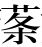

孔子曰“受业身通者七十有七人”，皆异能之士也。德行：颜渊，闵子骞，冉伯牛，仲弓。政事：冉有，季路。言事：宰我，子贡。文学：子游，子夏。师也辟【辟：邪僻。】，参也鲁，柴也愚，由也喭【喭：刚勐，卤莽。】，回也屡空，赐不受命而货殖焉，亿【亿：猜测。】则屡中。
孔子之所严事：于周则老子；于卫，蘧伯玉；于齐，晏平仲；于楚，老莱子；于郑，子产；于鲁，孟公绰。数称臧文仲、柳下惠、铜鞮伯华、介山子然，孔子皆后之，不并世。
孔子说“跟着我学习的学生中精通六艺的弟子有七十七人”，他们都是才能出众的人。其中在道德行为方面出众的有：颜渊、闵子骞、冉伯牛、仲弓。擅长行政事务的有：冉有、季路。在言辞口才方面突出的有：宰我、子贡。擅长文献典籍的有：子游、子夏。而颛孙偏激，曾参迟钝，高柴愚笨，仲由粗鲁，颜回经常贫穷，端木赐不接受天命而去经商，但是他预测的行情竟然经常是准确的。
孔子所尊敬和推崇的人：在周朝是老子；在卫国，是蘧伯王；在齐国，是晏平仲；在楚国，是老莱子；在郑国，是子产；在鲁国，是孟公绰。他经常称赞臧文仲、柳下惠、铜鞮伯华、介山子然，孔子的出生时间比他们都晚，不是同一时代的人。
颜回者，鲁人也，字子渊。少孔子三十岁。
颜渊问仁，孔子曰：“克己复礼，天下归仁焉。”
孔子曰：“贤哉回也！一箪【箪：古代用来盛饭食的竹器。】食，一瓢饮，在陋巷，人不堪其忧，回也不改其乐。”“回也如愚；退而省其私，亦足以发，回也不愚。”“用之则行，舍之则藏，唯我与尔有是夫！”
四子侍坐，选自《孔子圣迹图》。
先圣小像，选自《孔子圣迹图》。
回年二十九，发尽白，蚤死。孔子哭之恸，曰：“自吾有回，门人益亲。”鲁哀公问：“弟子孰为好学？”孔子对曰：“有颜回者好学，不迁怒，不贰过。不幸短命死矣，今也则亡。”
闵损字子骞。少孔子十五岁。
孔子曰：“孝哉闵子骞！人不间于其父母昆弟【昆弟：兄弟。】之言。”不仕大夫，不食污君之禄。“如有复我者，必在汶上矣。”
冉耕字伯牛。孔子以为有德行。
伯牛有恶疾，孔子往问之，自牖【牖：窗户。】执其手，曰：“命也夫！斯人也而有斯疾，命也夫！”
冉雍字仲弓。
仲弓问政，孔子曰：“出门如见大宾，使民如承大祭。在邦无怨，在家无怨。”
孔子以仲弓为有德行，曰：“雍也可使南面【南面：指治理诸侯国。】。”
仲弓父，贱人。孔子曰：“犁牛【犁牛：杂色毛的牛，不能用于祭祀，只能用来耕地。】之子骍且角【角：指角长得周正。】，虽欲勿用，山川其舍诸？”
颜回是鲁国人，字子渊。颜回比孔子小三十岁。
颜渊向孔子询问仁德的含义，孔子说：“约束、克制自己的欲望和言行，使一切言论和行动都归复礼仪制度，那么天下的人都会称道你是有仁德的人了。”
孔子说：“颜回是多么有贤德的人啊！只吃一小竹筐饭，只喝一瓢汤，住在简陋的小巷里，一般人忍受不了这种困苦，颜回却不改变自己向道好学的乐趣。”“颜回在听我授业时，像个愚蠢的人；下课后观察他私下的言行举止，他也能够刻意发挥了，颜回其实不愚蠢。”“任用你的时候，就身体力行；不任用你的时候，就隐藏起来，只有我和你才有这样的处世态度啊！”
颜回在二十九岁那年，头发已经全部变白了，死的时候还很年轻。孔子哭得非常悲伤，说：“自从我有了颜回，学生们对我越来越亲近了。”鲁哀公问：“学生中谁是最好学的？”孔子回答说：“有一个叫颜回的最好学，他从不把怒气转移到别人身上，也不犯同样的错误。不幸的是寿命很短，如今已经没有像他这样的人了。”
闵损，字子骞。闵损比孔子小十五岁。
孔子说：“闵子骞是一个非常孝顺的人啊！他侍奉父母，顺从兄弟，别人在他父母兄弟面前都不能说离间的话。”他不到卿大夫那里做家臣，拒绝季氏的委任。他曾经说：“如果再有人来征召我的话，我一定逃到汶水北面的齐国去。”
冉耕，字伯牛。孔子认为他有德行。
伯牛得了麻风病，孔子前往探望他，在窗户外面握住他的手，说：“这是命运啊！这样的人却得了这样的病，是命运啊！”
冉雍，字仲弓。
仲弓向孔子询问如何处理政事，孔子说：“出门去办事要表现得好像会见贵宾一样谦恭有礼，役使百姓要如同去承办隆重的祭祀一样虔诚谨慎。这样，在诸侯的封国里任职，就没有人怨恨你，在卿大夫的家邑里任职，就没有人怨恨你。”
孔子认为仲弓在道德行为方面有成就，说：“冉雍，可以让他做卿大夫一样的官，独当一面，统领一方。”
仲弓的父亲，是个地位卑贱的人。孔子打比方说：“耕牛所生的小牛长着纯红色的毛，两角长得周正，即使不想把它用作祭品，难道山川的神灵会舍弃它吗？”
冉求字子有，少孔子二十九岁。为季氏宰。
季康子问孔子曰：“冉求仁乎？”曰：“千室之邑，百乘【乘：是指春秋时的战车。】之家，求也可使治其赋。仁则吾不知也。”复问：“子路仁乎？”孔子对曰：“如求。”
求问曰：“闻斯行诸？”子曰：“行之。”子路问：“闻斯行诸？”子曰：“有父兄在，如之何其闻斯行之！”子华怪之，“敢问问同而答异？”孔子曰：“求也退，故进之。由也兼人，故退之。”
仲由字子路，卞人也。少孔子九岁。
子路性鄙，好勇力，志伉直，冠雄鸡，佩豭豚【豭豚：公猪。古人佩豭豚形象之物，表示勇敢。】，陵暴孔子。孔子设礼稍诱子路，子路后儒服委质，因门人请为弟子。
子路问政，孔子曰：“先之，劳之。”请益。曰：“无倦。”
子路问：“君子尚勇乎？”孔子曰：“义之为上。君子好勇而无义则乱，小人好勇而无义则盗。”
子路有闻，未之能行，唯恐有闻。
孔子曰：“片言可以折狱者，其由也与！”“由也好勇过我，无所取材。”“若由也，不得其死然。”“衣敝缊袍【缊袍：以乱麻为絮的长袍。泛指粗劣的冬衣。】与衣狐貉者立而不耻者，其由也与！”“由也升堂矣，未入于室也。”
季康子问：“仲由仁乎？”孔子曰：“千乘之国可使治其赋，不知其仁。”
子路喜从游，遇长沮、桀溺、荷丈人。
冉求，字子有，比孔子小二十九岁。曾担任过季孙氏的家宰。
季康子询问孔子说：“冉求称得上仁德吗？”孔子回答说：“拥有千户人家的城邑，拥有百辆兵车的卿大夫之家，可以让冉求去管理那里的兵赋。至于他称不称得上仁德，我就不清楚了。”季康子又问：“子路称得上仁德吗？”孔子回答说：“与冉求一样。”
冉求问孔子说：“事情一经听说就应该马上行动吗？”孔子说：“听到了就行动。”子路问：“事情一经听说就应该马上行动吗？”孔子说：“有父亲、兄长健在，怎么能一听说之后就马上行动呢？”子华对此感到奇怪，说：“我冒昧地问一下，为什么相同的问题却有不同的答案呢？”孔子说：“冉求做事畏缩多虑，所以我要勉励他。仲由做事好胜争强，所以我要抑制他。”
仲由，字子路，是卞地人。仲由比孔子小九岁。
子路生性粗朴，好逞勇斗力，心地刚强直率，头上插戴公鸡的羽毛，身上佩带公猪形的饰物，曾经欺虐过孔子。孔子就施行礼教，逐渐诱导子路，子路后来穿戴儒生的衣帽，带着拜师礼物，通过孔子学生的引荐，请求成为孔子的学生。
子路向孔子询问政事，孔子说：“自己先为百姓做出榜样，然后才能使百姓辛勤地劳作。”子路请求进一步的详细解答。孔子说：“不疲倦地持之以恒。”
子路问：“君子崇尚勇敢吗？”孔子说：“君子最崇尚的是道义。君子只崇尚勇敢而不崇尚道义，就作乱；小人只崇尚勇敢而不崇尚道义，就会做强盗。”
子路听到一件事，还没来不及去做，又唯恐听到另一件事。
孔子说：“只听到片面之词就可以决断案子的，恐怕只有仲由吧！”“仲由崇尚勇敢的精神超过了我之所用，就不适用了。”“像仲由这种性情，不会得到善终。”“穿着用乱麻絮做的破旧的袍子和穿着皮大衣的人站在一起，而不感到羞愧的，恐怕只有仲由吧！”“仲由的学问就好比登上了正厅，可是还没能进入内室。”
季康子问孔子：“仲由有仁德吗？”孔子说：“拥有一千辆兵车的国家，可以让仲由来管理那里的军政事物，至于他有没有仁德，我就不清楚了。”
子路喜欢跟随孔子出游，曾经遇见长沮、桀溺、扛着竹筐的老人家。
子路为季氏宰，季孙问曰：“子路可谓大臣与？”孔子曰：“可谓具臣矣。”
子路为蒲大夫，辞孔子。孔子曰：“蒲多壮士，又难治。然吾语汝：恭以敬，可以执勇；宽以正，可以比众【比众：使众人亲附。】；恭正以静，可以报上。”
初，卫灵公有宠姬曰南子。灵公太子蒉聩得过南子，惧诛出奔。及灵公卒而夫人欲立公子郢。郢不肯，曰：“亡人太子之子辄在。”于是卫立辄为君，是为出公。出公立十二年，其父蒉聩居外，不得入。子路为卫大夫孔悝之邑宰。蒉聩乃与孔悝作乱，谋入孔悝家，遂与其徒袭攻出公。出公奔鲁，而蒉聩入立，是为庄公。方孔悝作乱，子路在外，闻之而驰往。遇子羔出卫城门，谓子路曰：“出公去矣，而门已闭，子可还矣，毋空受其祸。”子路曰：“食其食者不避其难。”子羔卒去。有使者入城，城门开，子路随而入。造蒉聩，蒉聩与孔悝登台。子路曰：“君焉用孔悝？请得而杀之。”蒉聩弗听。于是子路欲燔台，蒉聩惧，乃下石乞、壶黡攻子路，击断子路之缨。子路曰：“君子死而冠不免。”遂结缨而死。
孔子闻卫乱，曰：“嗟乎，由死矣！”已而果死。故孔子曰：“自吾得由，恶言不闻于耳。”是时子贡为鲁使于齐。
子路做季孙氏的家宰时，季孙问孔子道：“可以说子路是德才兼备之臣吗？”孔子说：“可以说是后备充数之臣了。”
子路要出任蒲邑大卡，向孔子辞行。孔子说：“蒲邑这个地方有很多勇武之人，又很难治理。然而我告诉你：恭谨和谦敬，就可以驾驭勇武的人；宽厚和清正，可以使百姓亲近；恭谨、清正而社会安静，就可以报效上司了。”
当初，卫灵公有个受宠的姬叫南子。卫灵公的太子蒉聩曾得罪过她，害怕被她谋害就逃到了国外。等到卫灵公死了，而夫人南子想要立公子郢为王。公子郢不肯接受，说：“太子虽然逃亡了，但太子的儿子辄还在国内。”于是卫国立辄为国君，这就是卫出公。卫出公继承王位十二年，他的父亲蒉聩一直居住在国外，不能回来。这时子路担任卫国大夫孔悝的采邑的长官。蒉聩却和孔悝一起作乱，想办法带人进入孔悝家里，就跟他的党徒去袭击卫出公。卫出公逃到了鲁国，蒉聩于是回国即位为王，这就是卫庄公。当孔悝作乱时，子路还在外面办事，听到这个消息后立刻赶了回来。正好遇上子羔从卫国的城门出来，子羔对子路说：“卫出公逃走了，而城门已经关闭，您应该返回，不要白白地为他遭受祸殃。”子路说：“我吃着他的粮食，就不能回避他的危难。”子羔最后还是离开了。正赶上有个使者要进城，城门被打开了，子路就跟着进了城。子路来到蒉聩的住处，正好蒉聩和孔悝登上了孔宅内的高台。子路说：“大王哪里用得上孔悝？请让我把他杀死。”蒉聩不听从他的劝说。于是子路要放火烧台，蒉聩很害怕，就让石乞和壶黡到台下去攻打子路，斩断了子路的帽带。子路说：“君子就是死，也不能让帽子掉下来。”说完系好帽带就死了。
孔子听说卫国发生作乱的事，说：“哎呀，仲由死了！”不久，果真传来仲由的死讯。所以孔子说：“自从我有了仲由，恶言恶语的话再也没有听到过。”这时候子贡正替鲁国到齐国出使。
宰予字子我。利口辩辞。既受业，问：“三年之丧不已久乎？君子三年不为礼，礼必坏；三年不为乐，乐必崩。旧谷既没，新谷既升，钻燧改火【钻燧改火：古时钻木取火，因季节不同而用不同的木材。】，期可已矣。”子曰：“于汝安乎？”曰：“安。”“汝安则为之。君子居丧，食旨不甘，闻乐不乐，故弗为也。”宰我出，子曰：“予之不仁也！子生三年然后免于父母之怀。夫三年之丧，天下之通义也。”
宰予昼寝。子曰：“朽木不可雕也，粪土之墙不可圬【圬：抹墙。】也。”
宰我问五帝之德，子曰：“予非其人也。”
宰我为临菑大夫，与田常作乱【与田常作乱：《左传》记载，在田成子作乱时被杀的是阚止，他的字也是子我。司马迁可能把他误认为宰予了。】，以夷其族，孔子耻之。
宰予，字子我。他口齿伶俐，善于言辞。接受孔子教授的学业后，说：“一个人在其父母死后要服丧三年，时间不是太长久了吗？君子三年不习礼仪，礼仪必定会败坏；三年不演奏音乐，音乐必定会荒废。陈粮既然已经吃完，而新谷已经成熟了，取火用的木头已经换过，服丧一年也就可以了。”孔子说：“只守丧一年，你能够心安吗？”宰予回答说：“心安。”孔子说：“你既然感到心安理得，你就这样做吧。君子在服丧期间，即使是吃了美味的食物，也感觉不到甘甜，听到动听的音乐，也感觉不到愉快，所以君子才不这样做。”宰我于是退了出去，孔子说：“宰予不是一个仁人君子啊！孩子生下来三年，才能脱离父母的怀抱。为父母守孝三年，是天下共同遵循的礼仪。”
宰我白天睡觉，孔子说：“无法用腐朽的木头进行雕刻，污秽的墙壁是不能再粉刷了。”宰我询问五帝的德行，孔子说：“你不是问这种问题的人。”
宰我担任齐国临菑的大夫，同大臣田常一起发动叛乱，因此被灭族，孔子对此感到耻辱。
端沐赐，卫人，字子贡。少孔子三十一岁。
子贡利口巧辞，孔子常黜其辩。问曰：“汝与回也孰愈？”对曰：“赐也何敢望回！回也闻一以知十，赐也闻一以知二。”
子贡既已受业，问曰：“赐何人也？”孔子曰：“汝器也。”曰：“何器也？”曰：“瑚琏也。”
陈子禽问子贡曰：“仲尼焉学？”子贡曰：“文武之道未坠于地，在人，贤者识其大者，不贤者识其小者，莫不有文武之道。夫子不学【不学：指处处学习。】，而亦何常师之有！”又问曰：“孔子适是国必闻其政。求之与？抑与之与？”子贡曰：“夫子温良恭俭让以得之。夫子之求之也，其诸异乎人之求之也。”
子贡问曰：“富而无骄，贫而无谄，何如？”孔子曰：“可也；不如贫而乐道，富而好礼。”
端沐赐，是卫国人，字子贡。比孔子小三十一岁。
子贡口齿伶俐，擅长辞辩，孔子经常被他辩得理屈词穷。孔子问子贡：“你和颜回比，谁更强？”子贡回答说：“我哪里敢与颜回相比呢！颜回得知一个道理就能推导出十个道理，我得知一个道理只能推导出两个道理。”
子贡完成学业后，问孔子：“我是一个什么样的人？”孔子说：“你就像是一个器皿。”子贡说：“什么样的器皿？”孔子说：“宗庙祭祀时盛放黍稷的瑚琏。”
陈子禽问子贡说：“仲尼的学问是从哪里学到的？”子贡说：“周文王、周武王的仁义之道并没有完全丢掉，还在人间流传，贤能的人记住了其中的作为主干的大道理，不贤能的人记住了其中细枝末节的小道理，周文王、周武王的仁义之道无处不存在。先生在哪里都能学习，而且哪里又需要固定的老师呢！”陈子禽又问：“孔子到了一个国家，必定知道这个国家的政事。这是请求别人告诉他的？还是别人主动告诉他的呢？”子贡说：“先生是依靠温和、善良、恭谨、俭朴、谦让的美德得来的。先生这种求取方法不同于一般人的求取方法。”
子贡问孔子说：“富裕而不骄纵，贫穷而不谄媚，这样的人怎么样？”孔子说：“行是行；但还是不如虽然贫穷却乐于恪守圣贤之道，虽然富裕却能处事谦恭有礼。”
田常欲作乱于齐，惮高、国、鲍、晏，故移其兵欲以伐鲁。孔子闻之，谓门弟子曰：“夫鲁，坟墓所处，父母之国，国危如此，二三子何为莫出？”子路请出，孔子止之。子张、子石请行，孔子弗许。子贡请行，孔子许之。
遂行，至齐，说田常曰：“君之伐鲁过矣。夫鲁，难伐之国，其城薄以卑，其地狭以泄【其地狭以泄：《越绝书》《吴越春秋》作“其池狭以浅”。】，其君愚而不仁，大臣伪而无用，其士民又恶甲兵【甲兵：铠甲和兵器。借指战争。】之事，此不可与战。君不如伐吴。夫吴，城高以厚，地广以深，甲坚以新，士选以饱，重器【重器：宝器。比喻宝贵的人才。】精兵尽在其中，又使明大夫守之，此易伐也。”田常忿然作色曰：“子之所难，人之所易；子之所易，人之所难：而以教常，何也？”子贡曰：“臣闻之，忧在内者攻强，忧在外者攻弱。今君忧在内。吾闻君三封而三不成者，大臣有不听者也。今君破鲁以广齐，战胜以骄主，破国以尊臣，而君之功不与焉，则交日疏于主。是君上骄主心，下恣群臣，求以成大事，难矣。夫上骄则恣，臣骄则争，是君上与主有却【却：同“隙”，比喻感情上的裂缝。】，下与大臣交争也。如此，则君之立于齐危矣。故曰不如伐吴。伐吴不胜，民人外死，大臣内空，是君上无强臣之敌，下无民人之过，孤主制齐者唯君也。”田常曰：“善。虽然，吾兵业已加鲁矣，去而之吴，大臣疑我，奈何？”子贡曰：“君按兵无伐，臣请往使吴王，令之救鲁而伐齐，君因以兵迎之。”田常许之，使子贡南见吴王。
田常打算在齐国叛乱，却害怕高氏、国氏、鲍氏和晏氏的势力，所以想调动他们的军队去攻打鲁国。孔子听了这个消息，对他门下的弟子说：“鲁国，是祖宗坟墓所在的地方，是养育我们的国家，国家到了如此危险的地步，你们几个人为什么不挺身而出呢？”子路请求前去，孔子阻止了他。子张、子石请求前去，孔子也不答应。子贡请求前去，孔子答应了。
子贡于是出发了，来到齐国，游说田常说：“您攻打鲁国的计划失误了。那鲁国是很难攻打的国家，它的城墙薄而矮，它的护城河窄而浅，它的国君愚昧而且不仁，他的大臣虚伪而且无能，它的士兵和百姓都厌恶打仗，这样的国家不能与它交战。您不如去攻打吴国。吴国，它的城墙高而厚，它的护城河宽而深，士兵的铠甲坚固而崭新，它的战士经过了挑选而人员充足，人才和精良的武器都在其中，又派遣贤明的大臣守卫他，这样的国家是容易攻打的。”田常听了非常愤怒，脸色一变，说：“你认为困难的，是别人认为容易的；你认为容易的，是别人认为困难的。你用这些话来指教我，是什么用心呢？”子贡说：“我听说过这样的话，忧虑来自于国家内部的就攻打强大的国家，忧虑来自于国家外部的就攻打弱小的国家。如今，您的忧虑是来自于国家内部的。我听说您三次求封但三次都没有成功，是因为有的大臣不听从命令。现在，您要攻占鲁国来扩大齐国疆域，如果打胜了，您的国君就会更加骄纵，打败鲁国使得齐国的大臣更加受到尊崇，然而您的功劳却不在其中，那么您和国君的关系就会一天天疏远。这样您对上使国君产生骄纵的心理，对下使群臣放纵无羁，想以此成就大事，太困难了。国君骄纵就会随心所欲，群臣骄妄就会争权夺利，这样对上与国君有矛盾，对下与大臣互相争夺。像这样的话，您在齐国的处境就很危险了。所以说攻打鲁国不如攻打吴国。攻打吴国如果不能取胜，百姓战死在国外，大臣率兵在外作战，国内空虚，这样您在上没有强臣对抗，在下没有百姓责难，能够孤立国君、控制齐国的就只有您了。”田常说：“好。虽然如此，但是我的军队已经开赴鲁国了，现在从鲁国撤离而进兵吴国，大臣们会怀疑我，该怎么办？”子贡说：“您按兵不动，不要发动进攻，我请求出使吴国，让它出兵援助鲁国而攻打齐国，您就趁机出兵迎击它。”田常采纳了子贡的建议，派子贡南下拜见吴王。
说曰：“臣闻之，王者不绝世，霸者无强敌，千钧之重加铢两【铢两：一铢一两。引申为极轻的分量。】而移。今以万乘之齐而私千乘之鲁，与吴争强，窃为王危之。且夫救鲁，显名也；伐齐，大利也。以抚泗上诸侯，诛暴齐以服强晋，利莫大焉。名存亡鲁，实困强齐。智者不疑也。”吴王曰：“善。虽然，吾尝与越南战争，栖之会稽。越王苦身养士，有报我心。子待我伐越而听子。”子贡曰：“越之劲不过鲁，吴之强不过齐，王置齐而伐越，则齐已平鲁矣。且王方以存亡继绝为名，夫伐小越而畏强齐，非勇也。夫勇者不避难，仁者不穷约，智者不失时，王者不绝世，以立其义。今存越示诸侯以仁，救鲁伐齐，威加晋国，诸侯必相率而朝吴，霸业成矣。且王必恶越，臣请东见越王，令出兵以从，此实空越，名从诸侯以伐也。”吴王大说，乃使子贡之越。
子贡游说吴王说：“我听说，施行王道的国家不能使诸侯国灭绝，施行霸道的国家不能让另外的强大敌人出现，互相抗衡的千钧重量的双方，无论在哪一方加上一铢一两，就会出现重心的移位。现在拥有万辆兵车的齐国企图独自占有拥有千辆兵车的鲁国，来与吴国一争高低，我私下替大王感到危险。况且去救援鲁国，是显扬声名的事情；攻打齐国，是可以获得大利的事情。以此来安抚泗水以北的诸侯，以讨伐强暴的齐国来镇服强大的晋国，没有比这样做而获得更大利益的方法了，名义上保存即将灭亡的鲁国，实际上阻扼了强齐的扩张，聪明的人是不会犹豫不决的。”吴王说：“好。虽然如此，可是我曾经与越国交战，把越王逼退在会稽山上。越王自己吃苦耐劳，而且战士受到优待，有报复我的意图。您等我攻打了越国后再按您的计策去做。”子贡说：“越国的实力还比不上鲁国，吴国的强大也比不上齐国，大王把齐国搁置在一边而去攻打越国，到时齐国早已平定鲁国了。而且大王凭借保存和延续即将灭亡的国家的名义攻打弱小的越国，却害怕强大的齐国，这不是勇敢的表现。勇敢的人不回避艰难险阻，仁慈的人不使受约束的人陷入困境，聪明的人不会失掉时机，称王的人不会让一个国家从世上灭绝，凭借这些来树立他们的道义。现在，通过保存越国来向诸侯显示您的仁德，通过救援鲁国、攻打齐国来给晋国施加压力，各诸侯国一定会竞相来朝见吴国的，这样称霸天下的大业就成功了。大王如果真的畏惧越国，我请求东去会见越王，劝说他出兵追随您，这样做实际上可以使越国空虚，名义上是追随诸侯讨伐齐国。”吴王非常高兴，于是派遣子贡前往越国。
越王除道郊迎，身御至舍而问曰：“此蛮夷之国，大夫何以俨然辱而临之？”子贡曰：“今者吾说吴王以救鲁伐齐，其志欲之而畏越，曰‘待我伐越乃可’。如此，破越必矣。且夫无报人之志而令人疑之，拙也；有报人之志，使人知之，殆也；事未发而先闻，危也。三者举事之大患。”句践顿首再拜曰：“孤尝不料力【料力：量力。】，乃与吴战，困于会稽，痛入于骨髓，日夜焦唇干舌，徒欲与吴王接踵而死，孤之愿也。”遂问子贡。子贡曰：“吴王为人勐暴，群臣不堪；国家敝以数战，士卒弗忍；百姓怨上，大臣内变；子胥以谏死，太宰嚭用事，顺君之过以安其私：是残国之治也。今王诚发士卒佐之徼【徼：激发，激励。】其志，重宝以说其心，卑辞以尊其礼，其伐齐必也。彼战不胜，王之福矣。战胜，必以兵临晋，臣请北见晋君，令共攻之，弱吴必矣。其锐兵尽于齐，重甲困于晋，而王制其敝，此灭吴必矣。”越王大说，许诺。送子贡金百镒，剑一，良矛二。子贡不受，遂行。
越王清扫道路，到郊外迎接子贡，亲自驾车到子贡下榻的馆舍询问道：“这里是不开化的蛮夷小国，大夫为何郑重其事地屈尊光临此地？”子贡说：“现在我已经劝说吴王去救援鲁国而攻打齐国，他心里想要这么做，但担心越国，说‘等我攻下了越国之后才可行’。如果这样，越国被攻克是必然的了。何况没有报复他人的企图而使人怀疑他，是笨拙；有报复他人的企图而让人发觉了，是失败，事情还没有做而消息先传出去，是危险。这三种情况是办事情最大的祸患。”句践伏地叩头拜了两拜，说：“我曾经自不量力，竟和吴国交战，因而被困在会稽山上，对吴国恨入骨髓，早晚唇焦舌干，只打算与吴王一同赴死，这就是我的愿望。”于是询问子贡。子贡说：“吴王为人凶狠残暴，大臣们难以忍受；国家因为频繁的战争而十分疲敝，士兵们无法忍受；百姓怨恨君上，大臣们发生内讧；伍子胥因为直谏而被诛杀，太宰嚭执掌政事，迎合国君的错误，来保存自己的私利：这是国家将要灭亡的政治局面。现在大王如果能出动军队帮助吴王，来鼓舞他的志向，用贵重的宝物来获取他的欢心，用谦卑的辞令来尊崇对他的礼仪，那么他攻打齐国就必定无疑了。如果那场战争不能取胜，就是大王的福气了。如果取得了胜利，他一定会率领部队进逼晋国，请让我北上朝见晋君，劝说他共同攻打吴国，一定能削弱吴国的势力了。吴国的精锐部队全部消耗在齐国，主力部队被牵制在晋国，大王就趁吴国疲惫交困的时候去攻打它，这样一定能灭掉吴国。”越王听了十分高兴，答应按子贡的计策出兵。越王赠送给子贡一百镒黄金，一把剑，两支好矛。子贡没有接受，接着上路了。
报吴王曰：“臣敬以大王之言告越王，越王大恐，曰：‘孤不幸，少失先人，内不自量，抵罪于吴，军败身辱，栖于会稽，国为虚莽【虚莽：丘墟和草莽。指衰败荒芜的地方。】，赖大王之赐，使得奉俎豆而修祭祀，死不敢忘，何谋之敢虑！’”后五日，越使大夫种顿首言于吴王曰：“东海役臣孤句践使者臣种，敢修下吏问于左右。今窃闻大王将兴大义，诛强救弱，困暴齐而抚周室，请悉起境内士卒三千人，孤请自被坚执锐，以先受矢石。因越贱臣种奉先人藏器，甲二十领，鈇【鈇：斧。】屈卢之矛，步光之剑，以贺军吏。”吴王大说，以告子贡曰：“越王欲身从寡人伐齐，可乎？”子贡曰：“不可。夫空人之国，悉人之众，又从其君，不义。君受其币，许其师，而辞其君。”吴王许诺，乃谢越王。于是吴王乃遂发九郡兵伐齐。
子贡回报吴王说：“我郑重地把大王的话告知了越王。越王非常惶恐，说：‘我很不幸运，小时候就失去了父亲，又自不量力，得罪了吴国而获罪，以致军队被打败，自身也受到屈辱，栖息在会稽山上，国家成了荒凉的废墟，幸得大王的恩赐，使我还能够捧着祭品，祭祀祖先，这些恩德我至死也不敢忘怀，怎么还会另有图谋呢！’”五天后，越国派遣大夫文种对吴王伏地叩头说：“东海役使之臣句践派遣使者文种，冒昧上言大王下属向大王致以问候。近来私下听说大王将要振兴大义，派遣大义之师诛伐强暴，拯救弱小，围困残暴的齐国而安抚周王朝，请允许出动越国境内全部军队三千士兵，句践请求亲自披着铠甲、手执锐器，甘愿冒着箭石的危险冲锋陷阵。因此派越国卑贱的臣子文种进献祖先珍藏的宝器，铠甲二十件，鈇钺和屈卢矛、步光剑，用来作贵军官兵的贺礼。”吴王听了非常高兴，把文种的话转告给子贡，说：“越王想亲自跟随我讨伐齐国，可以吗？”子贡说：“不可以。使人家的国内空虚，尽用人家所有人马，又要让人家的国君跟随您出征，这样做不合道义。大王可以接受它的礼物，允许它派出军队，但拒绝它的国君随行。”吴王听从了子贡的意见，就辞谢越王。于是吴王就调动了九个郡的兵力去攻打齐国。
曾国藩：“太史公好奇，凡战国策士诡谋雄辩多着之篇，此载子贡之事特详，亦近战国策士之风。”
子贡因去之晋，谓晋君曰：“臣闻之，虑不先定不可以应卒，兵不先辨不可以胜敌。今夫齐与吴将战，彼战而不胜，越乱之必矣；与齐战而胜，必以其兵临晋。”晋君大恐，曰：“为之奈何？”子贡曰：“修兵休卒以待之。”晋君许诺。
子贡去而之鲁。吴王果与齐人战于艾陵，大破齐师，获七将军之兵而不归，果以兵临晋，与晋人相遇黄池之上。吴晋争强。晋人击之，大败吴师。越王闻之，涉江袭吴，去城七里而军。吴王闻之，去晋而归，与越南战争于五湖【五湖：指太湖。】。三战不胜，城门不守，越遂围王宫，杀夫差而戮其相。破吴三年，东向而霸。
故子贡一出，存鲁，乱齐，破吴，强晋而霸越。子贡一使，使势相破，十年之中，五国各有变。
子贡好废举，与时转货赀。喜扬人之美，不能匿人之过。常相鲁卫，家累千金，卒终于齐。
子贡便离开吴国前往晋国，对晋君说；“我听说，不事先谋划好计策，就不能应付仓猝的变故，不事先治理好军队就不能够战胜敌人。现在齐国与吴国即将开战，如果齐国打败了吴国，越国一定会趁机扰乱吴国；如果吴国战胜了齐国，吴国一定会率领它的部队逼近晋国边境。”晋君非常恐慌，说：“那该如何是好？”子贡说：“整理好兵器，休养士卒，等着吴军到来。”晋君答应了。
子贡离开晋国前往鲁国。吴王果然与齐国军队在艾陵作战，把齐国军队打得大败，俘虏了七个将军的兵马，而不肯班师回国，接着率领军队逼近晋国边境，与晋国人在黄池相遇。吴国和晋国双方争强斗胜。晋军攻击吴军，大败吴军。越王听到这个消息后，于是渡江去袭击吴国，一直打到距离吴国都城七里远的地方才安营扎寨。吴王听到这个消息，立刻离开晋国返回吴国，与越军在五湖一带作战。吴军三次交战都失败了，结果城门失守，越军就包围了王宫，杀了吴王夫差和他的相国。灭掉吴国三年后，越国在东方称霸了。
所以子贡这一次出使，保存了鲁国，扰乱了齐国，灭掉了吴国，使晋国强盛而使越国称霸。子贡一次出使，打破了各国旧有的局势，十年之中，齐、鲁、吴、晋、越五个国家的局势都发生了重大变化。
子贡喜好经商，贱买贵卖，根据时机随时转换货物资财。他喜欢褒扬别人的优点，不能隐瞒别人的过失。他曾经担任过鲁国和卫国的傧相，家财累积达到千金，最后死在齐国。
言偃，吴人，字子游。少孔子四十五岁。
子游既已受业，为武城宰。孔子过，闻弦歌之声。孔子莞尔【莞尔：微笑。】而笑曰：“割鸡焉用牛刀？”子游曰：“昔者偃闻诸夫子曰，君子学道则爱人，小人学道则易使。”孔子曰：“二三子【二三子：指随从者。】，偃之言是也。前言戏之耳。”孔子以为子游习于文学。
卜商字子夏。少孔子四十四岁。
子夏问：“‘巧笑倩兮，美目盼兮，素以为绚兮’，何谓也？”子曰：“绘事后素【绘事后素：郑玄注曰：绘，画文也，凡绘画，先布众色，然后以素分布其间，以成其文，喻美女虽有倩盼美质，亦须以礼成之。】。”曰：“礼后乎？”孔子曰：“商始可与言《诗》已矣。”
子贡问：“师与商孰贤？”子曰：“师也过，商也不及。”“然则师愈与？”曰：“过犹不及。”
子谓子夏曰：“汝为君子儒，无为小人儒。”
孔子既没，子夏居西河教授，为魏文侯师。其子死，哭之失明。
言偃是吴国人，字子游。言偃比孔子小四十五岁。
子游完成学业以后，出任武城的长官。孔子路过武城时，听到弹奏管弦演唱诗歌的声音。孔子微笑着说：“杀鸡何必用宰牛的刀呢？”子游说：“从前我听先生说过：‘君子学习了礼乐之道，就会爱护他人；小人学习了礼乐之道，就容易被役使。”孔子说：“学生们，言偃的话说得很对。先前我说的话只是开个玩笑而已。”孔子认为子游熟悉文献典籍。
卜商，字子夏。卜商比孔子小四十四岁。
子夏问：“‘姣美的笑容酒窝深深多好看啊，美丽的眼睛黑白分明多明澈啊，仿佛洁白的生绢染上了华丽多彩的图画’这三句诗说的是什么意思？”孔子说；“绘画这事情，要先施五彩，然后才上白色。”子夏说：“是不是礼仪也是产生在仁义之后的事情？”孔子说：“卜商，现在可以和你讨论《诗》了。”
子贡问：“颛孙师与卜商谁更贤能？”孔子说：“颛孙师做事有些过头了，卜商做事达不到要求。”子贡说：“这样就是颛孙师强一些吧？”孔子说：“做事过头和达不到要求同样是不完美的。”
孔子对子夏说：“你要做一个有才德的读书人，不要做一个浅薄不正派的读书人。”
孔子死后，子夏住在西河教授学业，担任魏文侯的老师。他的儿子死了，他因此将眼睛哭瞎了。
颛孙师，陈人，字子张。少孔子四十八岁。
子张问干禄【干禄：求取禄位。】，孔子曰：“多闻阙疑，慎言其余，则寡尤【寡尤：少犯错误。】；多见阙殆，慎行其余，则寡悔。言寡尤，行寡悔，禄在其中矣。”
他日从在陈蔡间，困，问行。孔子曰：“言忠信，行笃敬，虽蛮貊【蛮貊：古代称南方和北方落后部族。】之国行也；言不忠信，行不笃敬，虽州里行乎哉！立则见其参于前也，在舆则见其倚于衡【衡：车辕前端的横木。】，夫然后行。”子张书诸绅【绅：古代士大夫束腰的大带子。】。
子张问：“士何如斯可谓之达矣？”孔子曰：“何哉，尔所谓达者？”子张对曰：“在国必闻，在家必闻。”孔子曰：“是闻也，非达也。夫达者，质直而好义，察言而观色，虑以下人，在国及家必达。夫闻也者，色取仁而行违，居之不疑，在国及家必闻。”
曾参，南武城人，字子舆。少孔子四十六岁。
孔子以为能通孝道，故授之业。作《孝经》。死于鲁。
澹台灭明，武城人，字子羽。少孔子三十九岁。
状貌甚恶。欲事孔子，孔子以为材薄。既已受业，退而修行，行不由径，非公事不见卿大夫。
南游至江，从弟子三百人，设取予去就，名施乎诸侯。孔子闻之，曰：“吾以言取人，失之宰予；以貌取人，失之子羽。”
颛孙师是陈国人，字子张。颛孙师比孔子小四十八岁。
子张询问如何谋取官职获得俸禄，孔子说：“多听，对疑惑未解的问题，要保留在心中，不要妄加评论，对其余有把握的问题，要谨慎地谈论，就可以少犯错误；多看，对疑惑未解的问题，要保留在心中，不要妄加评论，对其余有把握的事情，要谨慎地施行，就可以减少悔恨。言语少过失，行为少悔恨，那么官职俸禄就在这里面了。”
有一天，子张跟随孔子在陈、蔡两国之间被围困了，子张询问如何才能行得通。孔子说：“说话要忠实可信，行为要厚道恭敬，即使在偏远的异族他乡，也是行得通的；说话不忠实诚信，行为不厚道恭敬，即使在本乡本土，也行不通啊！站着的时候，就仿佛看见‘忠信笃敬’几个字并列摆在面前；坐车的时候，就仿佛看见‘忠信笃敬’几个字挂在车前的横木上。做到这种地步，就能处处都行得通了。”子张就把这些话写在束腰的衣带上。
子张问：“读书人怎样做才称得上是通达了呢？”孔子说：“你所说的通达，指的是什么意思呢？”子张回答说：“在诸侯国中必定闻名，在大夫家中也必定闻名。”孔子说：“这是闻，不是通达。所谓通达的人，应该质朴、正直，而且还爱好道义，善于审度别人的言论，观察别人的表情，时常想着谦恭退让。这种人无论是在诸侯国中，还是在大夫家里一定能通达。而至于闻者，表面上好象追求仁德的样子，而实际行动上却违背仁德，以仁自居，并且心安理得，深信不疑，这种人无论是在诸侯国中，还是在大夫家里一定能取得名望。”
曾参是南武城人，字子舆。曾参比孔子小四十六岁。
孔子认为曾参能够通晓孝顺的道理，所以传授他学业，曾参写了一部《孝经》。曾参最后死在鲁国。
澹台灭明是武城人，字子羽。澹台灭明比孔子小三十九岁。
澹台灭明的长相非常丑陋。他想拜孔子为师，但孔子认为他资质低下。他的学业结束以后，回到家中修身实践，做事从不走邪门歪道，没有公事，就不去拜见卿大夫。
他南下游历到长江，跟随他的弟子有三百人，他为人处事取舍进退公正无私，名声在诸侯国中传扬。孔子听到这些情况以后，说：“我凭借言辞来判断人，对宰予的判断就错了；凭借相貌来判断人，对子羽的判断就错了。”
宓不齐字子贱。少孔子三十岁。
孔子谓子贱：“君子哉！鲁无君子，斯焉取斯？”
子贱为单父宰，反命【反命：复命。】于孔子，曰：“此国有贤不齐者五人，教不齐所以治者。”孔子曰：“惜哉不齐所治者小，所治者大则庶几矣。”
原宪字子思。
子思问耻。孔子曰：“国有道，谷【谷：指俸禄。】。国无道，谷，耻也。”
子思曰：“克伐怨欲不行焉，可以为仁乎？”孔子曰：“可以为难矣，仁则吾弗知也。”
孔子卒，原宪遂亡在草泽中。子贡相卫，而结驷【结驷：四匹马拉一辆车。】连骑，排藜藿入穷阎，过谢原宪。宪摄敝衣冠见子贡。子贡耻之，曰：“夫子岂病乎？”原宪曰：“吾闻之，无财者谓之贫，学道而不能行者谓之病。若宪，贫也，非病也。”子贡惭，不怿而去，终身耻其言之过也。
宓不齐，字子贱。宓不齐比孔子小三十岁。
孔子评论子贱说：“真是君子啊！如果鲁国没有君子的话，这个人从哪里学到君子的德行的呢？”
子贱出任单父的长官后，向孔子复命说：“这个地方有五个人比我贤明，他们教给我治理都邑的方法。”孔子说：“可惜啊！你所治理的地方太小了，如果治理的地方大些，那就差不多了。”
原宪，字子思。
子思向孔子询问什么叫作耻辱。孔子说：“国家政治清明，做官领取俸禄，却无所建树。国家政治黑暗，也做官领取俸禄，这就是耻辱。”
子思说：“争强好胜、自我夸耀、怨天尤人、贪得无厌都没有显现出来，可以称得上仁吗？”孔子说：“做到这个地步可以说是难能可贵了，至于是否称得上是仁，那我就不知道了。”
孔子死后，原宪就跑到荒郊野外中隐居。子贡做了卫国的相国，驾着多辆四匹马拉的车，拨开高过人头的野草，进入偏远简陋的小屋，探望问候原宪。原宪整理好所穿戴的破旧的衣帽会见子贡。子贡替他感到羞耻，说：“您难道不感到耻辱吗？”原宪说：“我听说，没有财产叫作贫穷，学了道理而不能施行叫作困顿。像我这样，是贫穷，而不是困顿。”子贡感到惭愧，不高兴地离开了，一辈子都为这次说错了话而感到羞耻。
公冶长，齐人，字子长。
孔子曰：“长可妻也，虽在累绁【累绁：缚犯人的绳索，借指拘禁。】之中，非其罪也。”以其子妻之。
南宫括字子容。
问孔子曰：“羿善射，奡荡舟【荡舟：用战船冲锋陷阵。】，俱不得其死然；禹稷躬稼而有天下？”孔子弗答。容出，孔子曰：“君子哉若人！上德哉若人！”“国有道，不废；国无道，免于刑戮。”三复“白圭之玷”，以其兄之子妻之。
公皙哀字季次。
孔子曰：“天下无行，多为家臣，仕于都；唯季次未尝仕。”
曾蒧字皙。
侍孔子，孔子曰：“言尔志。”蒧曰：“春服既成，冠者五六人，童子六七人，浴乎沂，风乎舞雩，咏而归。”孔子喟尔叹曰：“吾与蒧也！”
公冶长，齐国人，字子长。
孔子说：“公冶长，是值得把女儿嫁给他的一个人，虽然他曾经被关押在监狱中，但这并不是他的罪过。”孔子于是就把自己的女儿嫁给了他。
南宫括，字子容。
南宫括问孔子道：“羿擅长射箭，奡擅长行船，但他们都没有得到善终；为什么禹和稷亲自耕种却能够得到天下？”孔子没有回答他。子容出去以后，孔子说：“这个人是个君子啊！这个人崇尚德行啊！”孔子又说：“国家政治清明，他会被任用；国家政治黑暗，他不会遭受刑罚、杀戮。”子容经常诵读“白圭之玷”的诗句，于是孔子把他的兄长的女儿嫁给了他。
公皙哀，字季次。
孔子说：“天下的士人没有德行，他们大多数成了卿大夫们的家臣，在都城里做官；只有季次不曾做官。”
曾蒧，字皙。
曾蒧侍奉孔子，孔子说：“说说你的志向。”曾蒧说：“当能穿着春服的时候，我和五六个成年人，六七个小孩子，在沂水里洗洗澡，在舞雩台上吹吹风，然后唱着歌回家。”孔子叹了一口气说：“我赞成曾蒧的志向啊！”
颜无繇字路。路者，颜回父，父子尝各异时事孔子。
颜回死，颜路贫，请孔子车以葬【车以葬：指用卖掉车子的钱安葬。】。孔子曰：“材不材，亦各言其子也。鲤也死，有棺而无椁，吾不徒行以为之椁，以吾从大夫之后，不可以徒行。”
商瞿，鲁人，字子木。少孔子二十九岁。
孔子传《易》于瞿，瞿传楚人馯臂子弘，弘传江东人矫子庸疵，疵传燕人周子家竖，竖传淳于人光子乘羽，羽传齐人田子庄何，何传东武人王子中同，同传菑川人杨何。何元朔中以治《易》为汉中大夫。
高柴字子羔。少孔子三十岁。
子羔长不盈五尺，受业孔子，孔子以为愚。
子路使子羔为费郈宰，孔子曰：“贼【贼：残害。】夫人之子！”子路曰：“有民人焉，有社稷焉，何必读书然后为学！”孔子曰：“是故恶夫佞者。”
漆雕开字子开。
孔子使开仕，对曰：“吾斯之未能信。”孔子说。
公伯缭字子周。
周诉【诉：同“诉”，这里指说坏话。】子路于季孙，子服景伯以告孔子，曰：“夫子固有惑志，缭也吾力犹能肆【肆：古代指人处死刑后暴尸示众。】诸市朝。”孔子曰：“道之将行，命也；道之将废，命也。公伯缭其如命何！”
颜无繇，字路。颜路，是颜回的父亲，父子曾经先后在不同的时间里在孔子门下求学。
颜回死的时候，颜路非常贫穷，请求孔子把车子卖掉来安葬颜回。孔子说：“不管孔鲤有没有才能，说起来，都是自己的孩子。鲤儿死的时候，只有内棺，没有外椁，我不能卖了车子而步行去给他买外椁，因为我曾经位居大夫，所以是不可能徒步行走的。”
商瞿，是鲁国人，字子木。商瞿比孔子小二十九岁。
孔子把《周易》传授给商瞿，商瞿传给楚国人馯臂子弘，馯臂子弘传授给江东人矫子庸疵，矫子庸疵传授给燕国人周子家竖，周子家竖传授给淳于人光子乘羽，光子乘羽传授给齐国人田子庄何，田子庄何传授给东武人王子中同，王子中同传授给菑川人杨何。杨何在汉武帝元朔年间因为研究《周易》做了汉朝的中大夫。
高柴，字子羔。高柴比孔子小三十岁。
子羔身高不足五尺，师从孔子接受学业，孔子认为他很愚笨。
子路派子羔担任费邑和郈邑的长官，孔子说：“这是在残害人家的子弟！”子路说：“那里有百姓，那里有土神和谷神可以祭祀，为什么一定要说读书才算是做学问呢！”孔子说：“所以我讨厌那些用花言巧语诡辩的人。”
漆雕开，字子开。
孔子让子开去做官，子开回答说：“我对做官还没有信心。”孔子听到后非常高兴。
公伯缭，字子周。
子周在季孙氏面前毁谤子路，子服景伯将此事告知给孔子，说：“季孙氏他老人家原本就对子路产生了怀疑，对于公伯缭，我还是有力量杀死他的，把他的尸体放在街头示众。”孔子说：“仁义之道能够行得通，那是天意；仁义之道将要被废弃，那也是天意。公伯缭能把天意怎么样呢！”
司马耕字子牛。
牛多言而躁。问仁于孔子，孔子曰：“仁者其言也讱【讱：说话缓慢谨慎。】。”曰：“其言也讱，斯可谓之仁乎？”子曰：“为之难，言之得无讱乎！”
问君子，子曰：“君子不忧不惧。”曰：“不忧不惧，斯可谓之君子乎？”子曰：“内省不疚，夫何忧何惧！”
樊须字子迟。少孔子三十六岁。
樊迟请学稼【稼：种植五谷。】，孔子曰：“吾不如老农。”请学圃【圃：种植蔬菜。】，曰：“吾不如老圃。”樊迟出，孔子曰：“小人哉樊须也！上好礼，则民莫敢不敬；上好义，则民莫敢不服；上好信，则民莫敢不用情。夫如是，则四方之民襁负其子而至矣，焉用稼！”
樊迟问仁，子曰：“爱人。”问智，曰：“知人。”
有若少孔子四十三岁。有若曰：“礼之用，和为贵，先王之道斯为美。小大由之，有所不行；知和而和，不以礼节之，亦不可行也。”“信近于义，言可复也；恭近于礼，远耻辱也；因【因：亲，亲近。】不失其亲，亦可宗也。”
孔子既没，弟子思慕，有若状似孔子，弟子相与共立为师，师之如夫子时也。他日，弟子进问曰：“昔夫子当行，使弟子持雨具，已而果雨。弟子问曰：‘夫子何以知之？’夫子曰：‘《诗》不云乎？“月离于毕，俾滂沱矣。”昨暮月不宿毕乎？’他日，月宿毕，竟不雨。商瞿年长无子，其母为取室。孔子使之齐，瞿母请之。孔子曰：‘无忧，瞿年四十后当有五丈夫子。’已而果然。敢问夫子何以知此？”有若默然无以应。弟子起曰：“有子避之，此非子之座也！”
司马耕，字子牛。
子牛话多而且急躁。他问孔子什么是仁德，孔子说：“一个有仁德的人，他说话很谨慎。”子牛说：“说话谨慎，就可以算是有仁德吗？”孔子说：“实行起来很困难，说起来能不谨慎吗！”
子牛询问怎样才算是君子，孔子说：“君子不忧愁，不畏惧。”子牛说：“不忧愁，不畏惧，这样就能称之为君子吗？”孔子说：“做到问心无愧了，有什么值得忧愁，有什么值得畏惧呢！”
樊须，字子迟。樊须比孔子小三十六岁。
樊须向孔子请教如何种庄稼，孔子说：“我在这方面不如老农。”樊须又请教如何种菜，孔子说：“我在这方面不如菜农。”在樊迟退出后，孔子说：“樊须是个志向浅薄的小人啊！统治者提倡礼仪，那么老百姓就没有人敢不尊敬他；统治者仁义有理，那么老百姓就没有人敢不服从他；统治者诚恳守信，那么老百姓就没有人敢不真心实意地对待他。像这样的话，那么四面八方的百姓都会背着他们的子女来归顺了，哪里需要自己去种庄稼！”
樊须向孔子询问什么是仁德，孔子说：“仁德就是爱护别人。”樊须又问什么是智慧，孔子说：“智慧就是能够了解别人。”
有若比孔子小四十三岁。有若说：“礼的应用，以恰到好处最为可贵。在已故君王的治国之道中，这是其中最高明的地方。但无论大事小事都照这条原则办理，有时也有行不通的地方；只知道和谐的重要而一味地追求和谐，而不用礼去节制它，也是行不通的。”有若又说：“遵守信约要符合道义，这样说出的话才能经得起实践的检验；恭敬要符合礼仪，这样才能避免耻辱；有仰仗而没有失去自己的亲族，也就值得尊崇了。”
孔子死后，学生们都很怀念他，因为有若长得像孔子，学生们共同拥戴他为老师，如同孔子在世时那样对待他。有一天，学生们提出疑问说：“从前孔夫子在出行时，让学生们带上雨具，不久果真下雨了。学生们问道：‘先生是依据什么得知会下雨的？’先生说：‘《诗》上不是这样说吗？“月亮靠近毕宿，接着就会下大雨了。”昨天晚上月亮不就是停留在毕宿的位置上吗？’有一天，月亮停留在毕宿，结果没有下雨。商瞿的年纪很大了但仍然没有孩子，他的母亲要为他另娶妻室。孔子派商瞿前往齐国去，商瞿的母亲向孔子请求暂时不要派商瞿去齐国。孔子说：‘不用担心，商瞿四十岁后会有五个儿子。’后来果然如此。请问先生依据什么知道会这样？”有若沉默着，无话可答。学生们起来说：“有先生，您躲开点吧，这个位置不是您能坐的！”
公西赤字子华。少孔子四十二岁。
子华使于齐，冉有为其母请粟。孔子曰：“与之釜【釜：古代容量单位。六斗死升为一釜。】。”请益，曰：“与之庾【庾：古代容量单位。十六斗为一庾。】。”冉子与之粟五秉【秉：古代容量单位。十六斛为一秉。】。孔子曰：“赤之适齐也，乘肥马，衣轻裘。吾闻君子周急不继富。”
巫马施字子旗。少孔子三十岁。
陈司败【司败：官名，即司寇。】问孔子曰：“鲁昭公知礼乎？”孔子曰：“知礼。”退而揖巫马旗曰：“吾闻君子不党，君子亦党乎？鲁君娶吴女为夫人，命之为孟子。孟子姓姬，讳称同姓，故谓之孟子。鲁君而知礼，孰不知礼！”施以告孔子，孔子曰：“丘也幸，苟有过，人必知之。臣不可言君亲之恶，为讳者，礼也。”
梁鳣字叔鱼。少孔子二十九岁。
颜幸字子柳。少孔子四十六岁。
冉孺字子鲁，少孔子五十岁。
曹恤字子循。少孔子五十岁。
伯虔字子析，少孔子五十岁。
公孙龙字子石。少孔子五十三岁。
公西赤，字子华。公西赤比孔子小四十二岁。
子华出使到了齐国，冉有替他的母亲向孔子请求给些小米。孔子说：“给她一釜。”冉有请求增加，孔子说：“给他一庾。”结果冉有给了她五秉小米。孔子说：“公西赤前往齐国的时候，乘坐的是肥马拉的车，穿着轻暖的皮衣。我听说君子应该救济有紧急需要的人，而不应该接济富人。”
巫马施，字子旗。巫马施比孔子小三十岁。
陈司败询问孔子道：“鲁昭公懂得礼节吗？”孔子说：“懂礼。”孔子出去以后，陈司败向巫马施作了揖，说：“我听说君子不偏私袒护任何人，莫非君子也会偏私袒护别人吗？鲁君娶了吴国的女子做夫人，给她起名叫孟子。孟子本姓姬，忌讳以同姓相称，所以叫她孟子。如果鲁君懂得礼节，那还有谁不懂得礼节呢！”巫马施把陈司败的话告诉给孔子，孔子说：“我孔丘真是幸运，如果有了过失，别人一定会使我知道。作为臣下和人子，不能说君上和父亲的过错，为他们避讳的人，才是懂礼。”
梁鳣，字叔鱼，比孔子小二十九岁。
颜幸，字子柳，比孔子小四十六岁。
冉孺，字子鲁，比孔子小五十岁。
曹恤，字子循，比孔子小五十岁。
伯虔，字子析，比孔子小五十岁。
公孙龙，字子石，比孔子小五十三岁。
自子石已右三十五人，显有年名及受业，闻见于书传。其四十有二人，无年及不见书传者纪于左：
冉季字子产。
公祖句兹字子之。
秦祖字子南。
漆雕哆字子敛。
颜高字子骄。
漆雕徒父。
壤驷赤字子徒。
商泽。
石作蜀字子明。
任不齐字选。
公良孺字子正。
后处字子里。
秦冉字开。
公夏首字乘。
傒容箴字子皙。
公肩定字子中。
颜祖字襄。
鄡单字子家。
句井疆。
罕父黑字子索。
秦商字子丕。
申党字周。
颜之仆字叔。
荣旗字子祈。
县成字子祺。
左人郢字行。
燕伋字思。
郑国字子徒。
秦非字子之。
施之常字子恒。
颜哙字子声。
步叔乘字子车。
原亢字籍。
乐欬字子声。
廉絜字庸。
叔仲会字子期。
颜何字冉。
狄黑字皙。
邦巽字子敛。
孔忠。
公西舆如字子上。
公西葴字子上。
从子石以上共三十五人，他们的年龄、姓名以及受业情况明确地见于文献记载。其余四十二人，没有年龄以及不见于文献记载的，著录在下面：
冉季，字子产。
公祖句兹，字子之。
秦祖，字子南。
漆雕哆，字子敛。
颜高，字子骄。
漆雕徒父。
壤驷赤，字子徒。
商泽。
石作蜀，宇子明。
任不齐，字选。
公良孺，字子正。
后处，字子里。
秦冉，字开。
公夏首，字乘。
傒容箴，字子皙。
公肩定，字子中。
颜祖，字襄。
鄡单，字子家。
句井疆。
罕父黑，字子索。
秦商，字子丕。
申党，字周。
颜之仆，字叔。
荣旗，字子祈。
县成，字子祺。
左人郢，字行。
燕伋，字思。
郑国，字子徒。
秦非，字子之。
施之常，字子恒。
颜哙，字子声。
步叔乘，字子车。
原亢籍。
乐欬，字子声。
廉絜，字庸。
叔仲会，字子期。
颜何，字冉。
狄黑，字皙。
邦巽，字子敛。
孔忠。
公西舆如，字子上。
公西葴，字子上。
太史公曰：学者多称七十子之徒，誉者或过其实，毁者或损其真，钧之未睹厥容貌，则论言弟子籍，出孔氏古文近是。余以弟子名姓文字悉取《论语》弟子问并次为篇，疑者阙焉。
太史公说：在后世学者中有很多人都称述孔子的七十个门徒，在称誉他们的人之中，有的言过其实；在毁谤他们的人之中，有的损害了他们的真实形象，但谁都没有见到过他们的真实相貌，议论和说明孔子门徒事迹的材料，来自孔氏古文中的才比较符合实际情况。我收集有关孔子弟子的姓名、言行等情况全都取自《论语》中的弟子问答，把它们编排成一篇，有疑问的地方就空缺着。